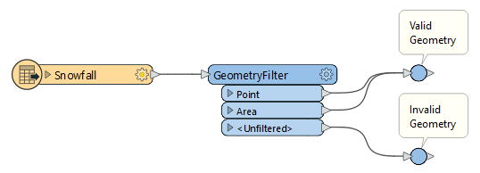

After completing this lesson, you’ll be able to:
The AttributeFilter transformer directs features by values in a chosen attribute. It is not a binary test (Yes/No) but a way to separate many values for a single attribute, for example:
You would have to use seven Tester transformers to separate this data, so using a single AttributeFilter saves space on the workspace canvas.
Use the Import... button to add attributes from existing datasets quickly.
In almost every scenario using multiple Tester transformers, it's possible to use a different filtering transformer to achieve the same result but using much less space on the canvas.
The AttributeFilter also works with numeric values; however, its only "operator" is to find equivalency (=), so you will rarely use it for arithmetical tests. In that scenario, the better solution is the AttributeRangeFilter.
The AttributeRangeFilter carries out the same operation as the AttributeFilter, except it can handle a range of numeric values instead of just a simple one-to-one match.
For example, we might want to separate data based on a range of snowfall values, like so:

Notice that the AttributeRangeFilter parameters dialog has a Generate... button to generate ranges automatically from a set of user-defined extents.
The GeometryFilter directs features based on geometry type, for example, point or area:

It can even filter data based on null geometry (tabular records):

The GeometryFilter is helpful for:
If the Tester, TestFilter, and AttributeFilter all filter features based on an attribute condition, then what’s the difference? When would I use each?
The best solution is to check out these two articles on the Safe Software blog:
| Single Test | Multiple Tests | Test Type | Operators | Attributes | ||||
| Single Clause |
Multi Clause |
Single Clause |
Multi Clause |
String | Numeric | |||
| Tester | Y | Y | – | – | Y | Y | 16 | Multiple |
| TestFilter | Y | Y | Y | Y | Y | Y | 16 | Multiple |
| AttributeFilter | Y | Y | – | – | Y | – | 1 | 1 |
| AttributeRangeFilter | Y | Y | – | – | – | Y | 6 | 1 |